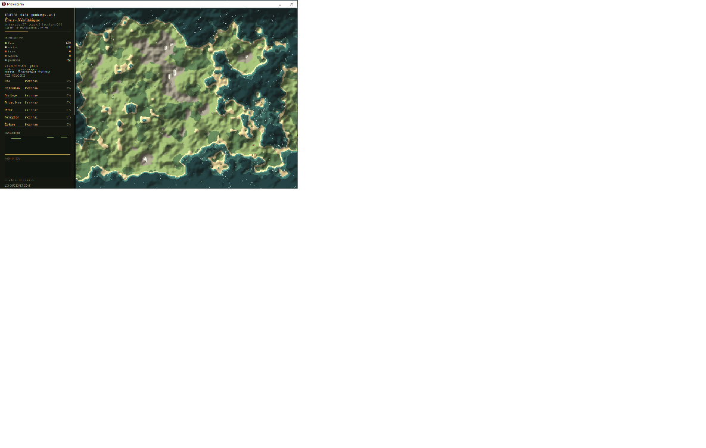
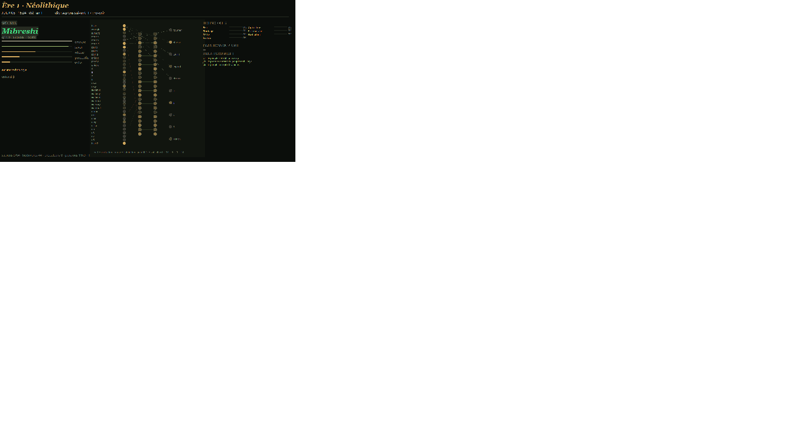

Images



« Ce n'est pas un modèle entraîné — c'est une espèce vivante. »
Voir sur GitHub Le réseau neuronal Le décodeurMicrocosme est une simulation de vie émergente écrite entièrement en Pascal/Delphi — aucune image, aucun son, aucune bibliothèque : 100 % code. Vingt-cinq sapiens naissent sur une île générée par bruit fractal, sans feu, sans écriture, sans mémoire. Tout le reste, ils l'inventent — ou n'y survivent pas.
Chaque sapiens porte ses 2 030 poids synaptiques : réflexe, réflexion en deux étages, échos. Pas de rétropropagation — l'héritage, le mentorat et la sélection naturelle façonnent chaque esprit, génération après génération.
Quatre cris dont le sens n'est fixé par personne — le carnet devine. Et chaque découverte frappe un mot nouveau en syllabes, chanté par son inventeur : le peuple écrit son dictionnaire.
La sélection agit sur la vitesse, la vue, la taille — et sur le taux de mutation lui-même. Chaque lignée porte sa couleur : l'histoire des familles se lit sur la carte.
Les huttes s'assemblent en bourgs nommés, les routes serpentent de ville en ville, les peuples élisent le chef qui sait. Puis la campagne se vide — le carnet écrit « le peuple devient citadin ».
Du feu à l'électricité : 63 technologies, inventions émergentes, exode rural, l'imprimerie qui fixe le savoir. Et l'ère 9 — Les Trois Cités — déjà écrite dans le programme.
Les voix à formants, les tambours, la houle, le vent, les grillons, la lyre des portails d'ère, la cloche du sacre : aucun fichier audio, tout est mathématique.
Microcosme n'est pas qu'un jeu : c'est un petit laboratoire d'évolution. 45 réglages en direct, l'incarnation d'un sapiens à la première personne, l'observation de son cerveau en mode esprit, le départ du monde avec zéro sapiens — à vous de semer les fondateurs. Vous sèmez, vous relâchez, vous regardez.

